Implementing a codec for a custom type
Instead of implementing optimized read and write methods for every combination of reading/writing function, I/O subtype, Encoding, and type, Inscription.jl abstracts this by asking you to implement one "codec" for each type/Encoding pair. Since most types only need one codec, this usually means one codec implementation per type to get a broad variety of encode, decode, load and store methods.
Encodings and codecs
A type may be written in several different ways. For example, 0xa53b may be written (in binary):
3b a5in little-endian binarya5 3bin big-endian binary34 32 32 39 39in ASCII decimal
... and so on.
This is modeled as zero-sized Encoding subtypes. Users may define arbitrary Encodings and implement codecs for them.
This API consists of three methods. codec_max_encoded_size is always needed, while codec_try_decode is only needed for decoding, and codec_try_encode! only for encoding. So, if values of a type are only ever read, the codec need not implement codec_try_encode!, and vice versa. See their docstrings for details (click them to go to their docstring in this documentation).
Inscription.codec_max_encoded_sizegives the maximal size in bytes for the encoding of any instance of a type, as aVal, orInscription.Unboundedif there is none, as for strings.Inscription.codec_try_decodeattempts to decode an instance ofTfrom aInscription.DecodeInput.Inscription.codec_try_encode!attempts to encode an instance ofTinto anInscription.EncodeOutput.
When the bytes are not a valid encoding, codec_try_decode returns an Invalid, and when a value can't be encoded, codec_try_encode! does. Its payload may say why, e.g. Invalid(Overflow), and is passed on in the DecodeError or EncodeError that the user gets. The payload types are declared with Inscription.codec_decode_invalid_type and Inscription.codec_encode_invalid_type. They default to Nothing, so a codec without payloads returns Invalid(). Like codec_try_decode and codec_try_encode!, the first is only used for decoding, and the second only for encoding.
codec_try_decode reads its input through Inscription.require_bytes, Inscription.peek_byte and Inscription.decode_field, and codec_try_encode! writes its output through Inscription.reserve_bytes and Inscription.encode_field. When loading from an AbstractBufReader, these make the reader wait for exactly the bytes the codec reads, so a codec for a variable-length encoding, like Char's UTF8 encoding, doesn't make loading wait for the maximal number of bytes of any instance of T. When the input is known to hold the maximal number of bytes, as it usually is, the checks of these functions for constant sizes are compiled away. Code only against the abstract DecodeInput and EncodeOutput: a codec is compiled for several internal input and output types, and must not depend on which one it gets. In particular, its input may not have all bytes available yet. Reads may make more bytes available, which may invalidate views from earlier reads, and the codec may be run again on the same bytes. See Inscription.DecodeInput.
Deriving codecs automatically
Instead of implementing a codec, a type can get one from its CodecScheme, by adding a method to Inscription.codec_scheme. It defaults to Manual(), which means the codec must be implemented manually, as described above.
Bits types
Two encodings are special: LittleEndian and BigEndian (together: Endianness) represent the "native" binary representation of an object.
Not all objects must have Endianness encodings. For example, the BigEndian encoding of the Julia Char 'Ø' would be c3 98 00 00 (same as reinterpret(UInt32, 'Ø') in big endian), but it may not be prudent to expose the internal binary representation of Julia objects. Instead, Inscription.jl defines a struct UTF8 <: Encoding end, and defines the encoding of 'Ø' under UTF8 as c3 98 (which is its representation in e.g. a Julia String).
For the endianness encodings, the codec may be derived from the bits of the type in memory:
- If
codec_scheme(T, e)returnsBitsLoadable(), the type may be loaded and stored via pointer loads or stores, or memcpy. - Else, if it returns
BitsStorable(), it may be stored via pointer stores, but needs validation on loading, as not all bit patterns are valid.
This simplifies the common case for e.g. UInt32 where the endianness encoding is simply writing its bits directly to memory (possibly byte-swapping, depending on the host CPU endianness).
Proxies
A type that can be converted to and from another type P with a codec can be encoded exactly as P is, with any encoding that P has a codec for, by declaring codec_scheme to be Proxy{P}(). Then, implement Inscription.try_to_proxy, which is needed for encoding, and Inscription.try_from_proxy, which is needed for decoding. A type that is only encoded, or only decoded, only needs the one method. Both may return an Invalid: try_to_proxy if the value can't be represented by the proxy, which makes encoding fail with InvalidValue, and try_from_proxy if the proxy is not a valid value, which makes decoding fail with InvalidData. The errors of decoding and encoding the proxy are passed on, so the payloads of a proxied type are those of try_to_proxy or try_from_proxy, and those of the proxy.
For example, this struct has padding in memory, so it can't be BitsLoadable, but it can be encoded as a tuple, which has no padding in its encoding:
using Inscription: Inscription, Proxy, Endianness
struct Record
kind::UInt8
id::UInt32
end
Inscription.codec_scheme(::Type{Record}, ::Endianness) = Proxy{Tuple{UInt8, UInt32}}()
Inscription.try_to_proxy(x::Record, ::Endianness) = (x.kind, x.id)
function Inscription.try_from_proxy(::Type{Record}, (kind, id)::Tuple{UInt8, UInt32}, ::Endianness)
return Record(kind, id)
endThe encoding of a Record is then 5 bytes: the kind, followed by the id. A proxy compiles to the same code as its proxy type does, except that the bulk functions, such as decode_all!, can't copy the memory of many values at once, as they can for BitsLoadable types.
If no other way applies, the codec has to be manually implemented, as described above. That is always a valid option, also for types that are not bitstypes, and for types whose encodings have no maximal size.
Overloading functions
A codec gives a type all the functions of Inscription.jl, and it can be nested in tuples, proxies and other codecs. But it isn't always the fastest option. For example, a codec reads a string that is terminated by some byte with Inscription.peek_byte, one byte at a time, where e.g. BufferIO.buffer_until is much faster for long strings.
In such cases, you may add methods for your type to the functions below, implemented directly with BufferIO and MemoryViews. There are two cases:
- The type has a codec. Then the method is an optimization, and must behave exactly like the function would without it. The other functions may or may not use the method.
- The type has no codec. Then only the function itself, and the functions that the table below says use it, work for the type. Adding methods to
try_decode_next,try_encode!,try_loadandtry_storeis enough for all functions that aren't bulk functions. The others throw anArgumentError. Values of the type can't be nested in tuples, proxies or the codecs of other types.
Which functions use which
| Method added to | Also used by | Function that reports errors |
|---|---|---|
try_decode | try_decode without an index | |
try_decode_next | Without a codec: try_decode, decode, decode_next, try_decode_exact, decode_exact, try_load_exact, load_exact | |
try_decode_exact | try_decode_exact without an index, try_load_exact, load_exact | |
decode | decode without an index | |
decode_next | ||
decode_exact | decode_exact without an index | |
try_encode! | try_encode! without an index. Without a codec: encode! | |
encode! | encode! without an index | |
try_load | load | |
try_load_exact | load_exact | |
try_store | Without a codec: store | |
store | ||
decode_all! | decode_every! | try_decode_next |
encode_all! | encode_every!, and store_into of types with a codec | try_encode! |
load_into! | load_all!, load_every! | try_load |
store_into | store_all, store_every | try_store |
The functions that end in _every call the function in the last column to get the error of the element that failed. Without a codec, also add a method to that, or they throw an ArgumentError instead of the error. Functions with arguments that are converted, such as a Vector{UInt8}, and the functions in the modules Inscription.Little and Inscription.Big, use the method of the function of the same name. With a codec, decode, encode! and store do not use the methods of the try_ functions.
Signatures
To avoid method ambiguities and methods that are not called for some arguments:
- Let the types of the memory be
MemoryView{UInt8}for bytes that are only read, andMutableMemoryView{UInt8}for bytes that are written. Likewise, let the elements beMemoryView{MyType}andMutableMemoryView{MyType}. Do not leave the argument untyped. - Let the type of indices and byte counts be
Integer, notInt. - Let the type of IOs be
AbstractBufReaderorAbstractBufWriter. - Define the methods for a concrete type and a concrete encoding, at least one of which is defined in your package.
For example, for strings that are terminated by a zero byte:
using Inscription, BufferIO
using Inscription.DecodeErrorKinds: EndOfInput, Truncated
struct CStr
s::String
end
function Inscription.try_load(io::AbstractBufReader, ::Type{CStr}, ::LittleEndian)
buffer = buffer_until(io, 0x00)
# The buffer can't grow enough
buffer === nothing && throw(IOError(IOErrorKinds.BufferTooShort))
isempty(buffer) && return DecodeError(EndOfInput)
last(buffer) == 0x00 || return DecodeError(Truncated)
x = CStr(String(buffer[1:(end - 1)]))
consume(io, length(buffer))
return x
endThis is enough for try_load and load to work.
What the methods must do
- Return what the docstring of the function says, also in the case of errors.
- Load and store every element all-or-nothing: an element that fails consumes nothing from the IO.
load_every!and the like call another function to get the error of that element, so if part of it was consumed, they may continue in the middle of the data. load_into!,store_into,decode_all!andencode_all!must return zero elements only if the destination or source array is empty, the IO is at EOF, or the next element fails. Otherwise, the functions that use them stop early.- Return the number of elements, and of bytes, that were actually processed. The element counts, and the byte counts where memory safety depends on them, are checked, and an
ErrorExceptionis thrown if they are out of range, but values in range are trusted.
Visual guide

Structs
To be BitsLoadable, all fields of the struct must be BitsLoadable. Similarly, to be BitsStorable, all fields must be BitsStorable or BitsLoadable (which implies BitsStorable).
Padding
Padding is not allowed in derived codecs, because they present pitfalls for users. Because padding is platform-dependent, Inscription.jl uses a conservative algorithm for determining padding: It assumes the alignment of a primitive is equal to its size. A struct's alignment is the largest among its fields.
So, for example, this struct:
struct Foo
a::UInt32
b::Float16
endcannot be BitsLoadable or BitsStorable, because it has sizeof(Foo) == 8, yet the sum of its field sizes is only 6. There are two bytes of padding at the end.
Tuples are special-cased structs, and allow padding. Padding is ignored when encoding and decoding, i.e. the fields are written in order, without padding.
Odd-sized primitives
As of Julia 1.14, Julia supports primitive types with a bit size not a multiple of 8, such as a 20-bit primitive type. These are known as odd-sized primitives (OSP). Because such types are stored with padding, OSP cannot be BitsLoadable or BitsStorable.
Furthermore, the abstractions of Inscription.jl only have the concept of reading or writing an integer number of bytes. There is no interface to read 20 bits (2 bytes and half of the next byte).
Therefore, any manual codec for OSP types must read an integer number of bytes, unpacking the bits by hand. This may be done by loading a wider type and casting to OSP, as in the example below. Note that in this case we still load an integer number of bytes, since 2 × 20 bits = 40 bits = 5 bytes.
using Core.Intrinsics: trunc_int
using BufferIO: AbstractBufReader, get_nonempty_buffer, consume
using Inscription: decode, LittleEndian
primitive type U20 20 end
function load_two_u20(io::AbstractBufReader)
buffer = @something get_nonempty_buffer(io, 5) return nothing
a = decode(buffer, 1, UInt32, LittleEndian())
b = decode(buffer, 2, UInt32, LittleEndian())
consume(io, 5)
return (trunc_int(U20, a), trunc_int(U20, b >> 12))
end